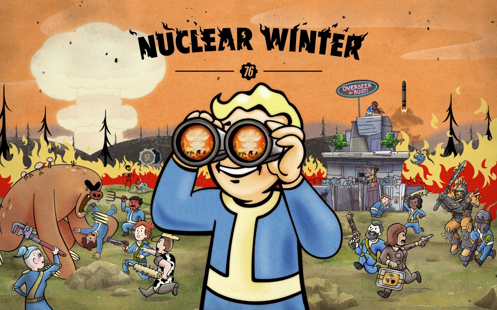

Наша почта:
falloutfans@yandex.ru
Fallout (рус. Выпадение радиоактивных осадков) —
серия постапокалиптических компьютерных ролевых игр, выпущенных
компаниями Interplay Entertainment, Black Isle Studios, Micro Forté,
Bethesda Softworks и Obsidian Entertainment. Действие происходит
после ядерной войны на территории США, которая превратилась в радиоактивную
пустыню и охвачена анархией.
Хотя события и помещены в далёкое будущее, спустя десятки лет после ядерного
конфликта, Fallout отличается характерным ретрофутуристическим стилем,
вдохновлённым массовой культурой 40—50-х годов XX века. Игры основной серии,
обладая большим открытым миром, позволяют свободно исследовать разнообразные
локации и решать задачи различными способами.